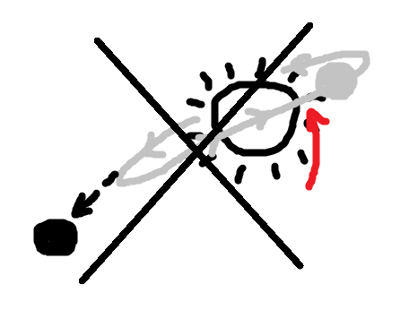

Solution: Matilda
Answer: ATYRANT
Written by Ethan
First identify the images. By the flavortext, AREN'T seems to be important. The common theme
between all these words and AREN'T, is that the contraction N'T can be placed after them to make
a new word - or make something that sounds like a new word.
This is also hinted by the X (meaning not) over each of the images. For example, PEAR -> PEARN'T, which sounds like PARENT,
meaning a guardian. Or FEZ -> FEZN'T -> pronounced PHEASANT, a bird. After applying this process to all the words, link the clues,
then index the given number into each of the answers to give the cluephrase ATTIRE ONE SIX (X is given).
Repeat the "add N'T" process one more time to the word ATTIRE, and with the enumeration (1,6), gives
A TYRANT, how you would describe Miss Trunchbull.
| Image | Imagen't | Clue | Indexed letter |
|---|---|---|---|
| AXE | ACCENT | pronunciation (1) | A |
| TEN | TENANT | occupant (1) | T |
| MUTE | MUTANT | alien (3) | T |
| VIOLIN | VIOLENT | vicious (2) | I |
| PEAR | PARENT | guardian (3) | R |
| ROAD | RODENT | rat (4) | E |
| PORT | PORTENT | warning (2) | O |
| PUNCH | PUNGENT | smell (3) | N |
| FEZ | PHEASANT | bird (3) | E |
| DISCO | DISCOUNT | deduction (3) | S |
| JOY | JOINT | link (3) | I |
| X |
Author’s Notes
The idea first came to me seeing a meme with FEZ -> PHEASANT, and I really liked this mechanic and decided to implement it. A TYRANT fortunately was a valid
meta answer and thematic. The leap from ATTIRE -> A TYRANT was a little sketchy, so I decided to give the enumeration. This is probably one of my favorite
puzzles in the set (or perhaps in the entire hunt); it's a simple, funny (meme) concept that I believe was almost executed perfectly. I regret not being able to clue
X better, but the best clue I could find was SEXT -> SEXTANT... and cluing that would not be very appropriate for a children's book round! DISCOUNT is also a little fishy as it's
pronounced a little differently than DISCO+NT.
Someone sent us this drawing as a possible replacement for the X ;). EXORBIT-ANT